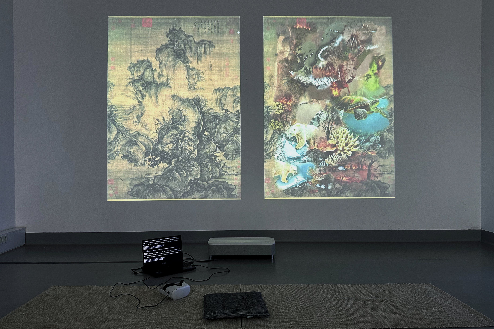
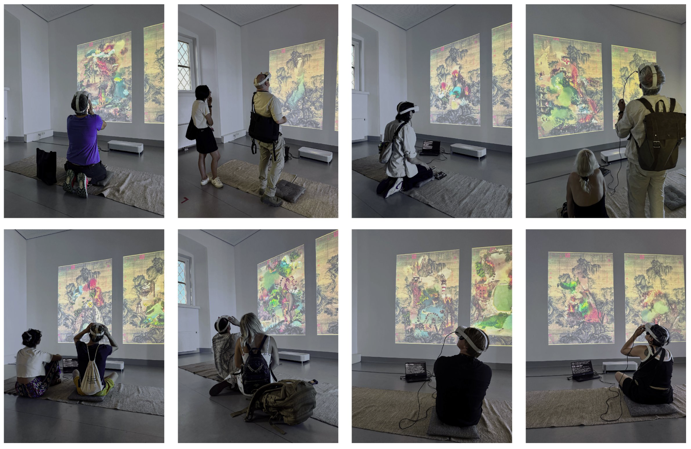
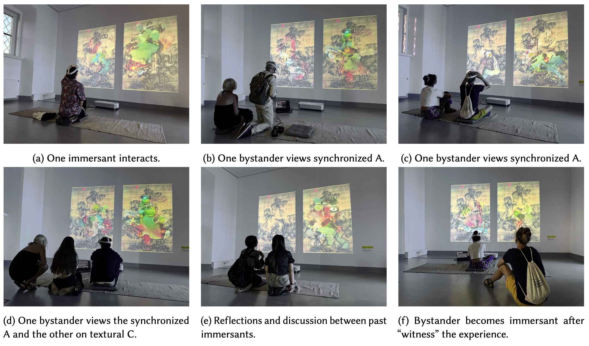
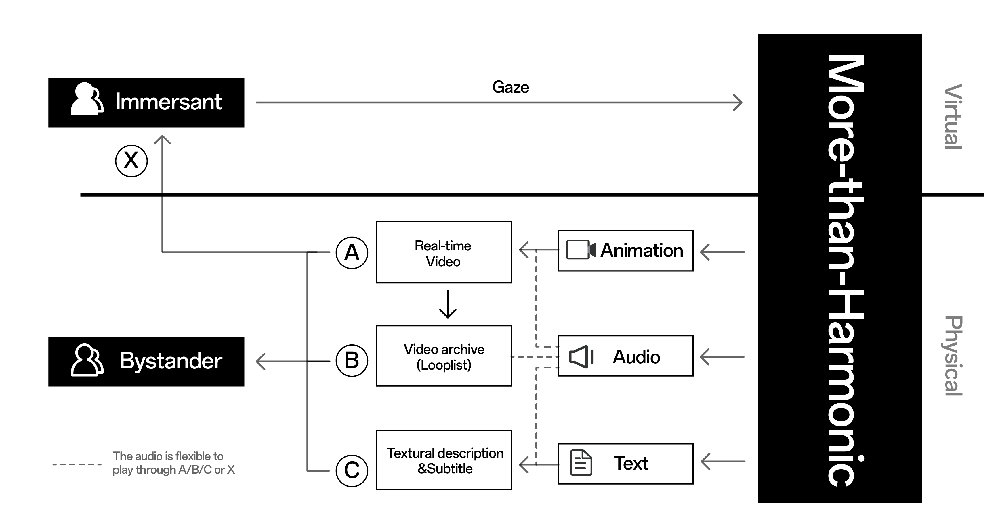
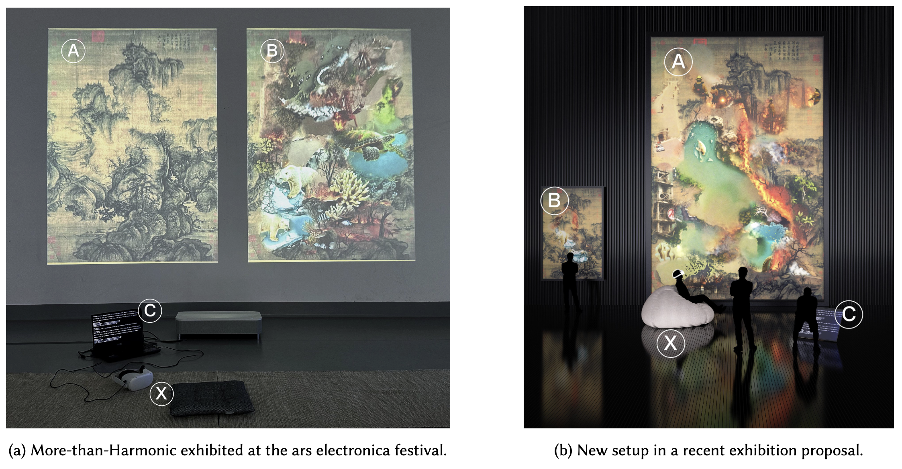

More-than-Harmonic
2023-2024
In the face of the Anthropocene crisis, what kind of world should we world? Donna Haraway rejects simplistic solutions, urging us to “stay with the trouble.” Reacting to this call, More-than-Harmonic is an interactive artwork that immerses participants in a real-time, embodied worlding experience, synthesized through customized AI technologies.

• Caption: More-than-Harmonic Exhibited at Ars Electronica Festival 2024.
The gaze of the immersent gradually transforms the observed shanshui into a dynamic, multimodal worlding experience embracing the complex relationality. More-than-Harmonic integrates multisensory engagement with AI-generated content, animations, audio, and text to craft a dynamic worlding experience spanning virtual and physical realities. Real-time gaze-driven animation and audio are presented to the immersant in VR and synchronized for bystanders. After each engagement, More-than-Harmonic reverses the transformation and saves the immersant’s animation as a video archive for replay, reflecting on immersive experiences while inspiring bystanders to participate.

• Caption: Participants with More-than-Harmonic at Ars Electronica Festival 2024.
This work encourages both immersants and bystanders to raise a profound awareness of and connection to the complex relationality of all beings, opening possibilities to stay with the trouble.
Shanshui Worlding (Context)
Worlding is widely seen as a critical tool to go beyond the homogenization of globalization [Connery and Wilson
2007, pp. 213, 216]. It encourages site-specific cultural and political practices beyond the dominant narrative of “the capitalist dialectic of state and society” [Goh 2014, p. 8]. More-than-Harmonic is initially inspired by non-Eurocentric and pluralistic perspectives on the discourse of worlding. Motivated by Jacques Derrida’s différance [Derrida 2020] and Édouard Glissant’s emphasis on cultural diversity and relationality [Glissant 2024, p.141] in worlding, this work seeks alternative worlding technics in Eastern culture. In Daoist philosophy, the concept of oneness and its nondualistic thinking align closely with the principles of worlding [Zhan 2011] and are deeply intertwined with shanshui (i.e.,
traditional Chinese ink painting depicts landscape). In other words, shanshui is an alternative worlding technics.
Extending on shanshui’s noninstrumental and nondominant thinking of nature, More-than-Harmonic prioritizes
Haraway’s call for “staying with the trouble” to rethink shanshui and echo on shanshui worlding. This artwork focuses on the complex relationality that shapes the current world and encompasses the conflicts and crises of the Anthropocene in worlding. In More-than-Harmonic, shanshui goes beyond the stereotypical understanding of Daoist oneness and surpasses the conventionally romanticized and imagined depiction of harmony; it confronts the current troublesome realities. Through this transcendence of oversimplicity of harmony in worlding, More-than-Harmonic refines shanshui worlding and envisions a multilayered worlding approach that focuses on:
• Pluralistic perspectives and cultural diversity in worldviews;
• Non-romanticized and non-simplified thoughts of harmony in shanshui worlding;
• Staying with the trouble, complex relationality, and relational ontologies in world-making;
• Ever-changing dynamics in wording.
As a result, we propose an “Expanded Shanshui Worlding” reflecting the current complex relationality of all beings–
human, nonhuman, and ecosystems within a dynamic worldview. We further craft this worlding as an interactive
art experience in More-than-Harmonic; the artwork immerses the participant in this embodied interactive “Expanded
Shanshui Worlding” experience, in which the immersant navigates the speculative narrative through their gaze, worlding a world in real-time to be “staying with the trouble.”
Interactive Experience
The immersant dons a headset to gaze upon a serene shanshui in VR. Their gaze becomes the driving force that gradually transforms the observed shanshui into dynamics of the ``Expanded Shanshui Worlding'' experience. The visual transformation simultaneously incorporates textural and auditory experiences. As AI-generated content replaces and merges with the original, a voice-over and accompanying subtitles narrate the changes, simulating a news report voice that explains the evolving world-making. The immersant's interaction accumulates the multimodal effects as they continuously engage with the artwork.

Upon the immersant removing the VR headset, the transformation reverses, restoring the serene shanshui. This cyclical process enriches the dynamics of worlding and the interplay between all beings, offering a reflective meditation on the themes of the Anthropocene and ``staying with the trouble.'' The real-time animation and sound experienced in the VR are concurrently displayed to the bystanders, enabling them to witness the evolving narrative. Additionally, the archived videos are continuously updated in real-time, allowing past immersants to reflect on their experiences while inspiring bystanders to participate.
Technical Rider


Setup (a) Equipment list:
- X: Meta Quest 2/3 VR Headset;
- A+B: 4K Projection (with built-in speaker);
- C: MSI Titan GT77HX laptop (RTX4090);
- Others: Flexible furnishing + Power Supply 850W + 2 x outlets.
Setup (b) Equipment list:
- X: Meta Quest 2/3 VR Headset;
- A: 2K Screen or Projection;
- B: 72' 2K Screen;
- C: 36' 2K Screen + MSI Titan GT77HX laptop (RTX4090);
- Others: Flexible furnishing + Power Supply 850W + 2 x outlets.
References:
- Christopher Leigh Connery and Rob Wilson. 2007. The worlding project: Doing cultural studies in the era of globalization. North Atlantic Books.
- Daniel PS Goh. 2014. Worlding multiculturalisms: The politics of inter-Asian dwelling. Routledge.
- Jacques Derrida. 2020. Différance. Gyldendal A/S.
- Édouard Glissant. 2024. Poetics of relation. University of Michigan Press.
- Mei Zhan. 2011. Worlding oneness: Daoism, Heidegger, and possibilities for treating the human. Social text 29, 4 (2011), 107–128.